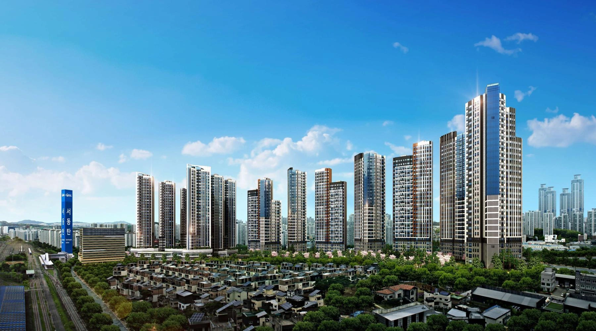
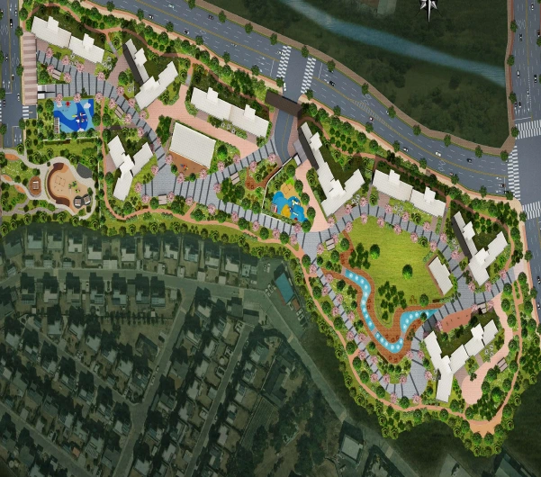

서동탄역과 철도망
1호선 서동탄역 이용 생활권.
서동탄~동탄 1호선 연장과 동탄~인덕원선은 2029년 개통 목표로 추진됩니다.
서동탄역 랜시티 10년 장기임대
서동탄역과 동탄신도시 생활권을 가까이.
10년의 안정적인 거주, 그다음 내 집 마련까지 살펴보세요.

상담 신청만으로 지급되는 혜택은 아닙니다.
지급 시점과 세부 안내는 상담 시 확인해 주세요.
서동탄역을 중심으로
동탄과 병점으로 넓어지는 생활.
1호선 서동탄역 이용 생활권.
서동탄~동탄 1호선 연장과 동탄~인덕원선은 2029년 개통 목표로 추진됩니다.
GTX-A 동탄역과 병점역으로 이어지는 주변 교통망.
GTX-C 병점 연장 사업도 추진 중입니다.
동탄신도시와 인접한 입지.
대형마트·학교·공원 등 주변 생활시설을 함께 누리는 일상을 그려보세요.
예정 철도는 현재 운행 중인 노선과 구분됩니다. 노선·개통 목표·환승 계획은 관계기관 추진 상황에 따라 변경될 수 있습니다. 시설 이용 경로와 소요시간은 이동수단에 따라 다르며 학교 배정은 별도 확인이 필요합니다.
화성시 · 동탄인덕원선 개통 목표 · 화성시의회 · 1호선 연장 구간 · 화성시의회 · 트램 일정 · 화성시 · GTX-C 병점 연장 추진현황
잦은 이사 부담을 줄이고
안정적인 일상을 계획하는 10년 장기임대.
사업 안내상 청약통장·주택 소유·소득 요건에 대한 제한 없이 신청할 수 있는 방식으로 안내합니다.
10년 민간임대 후 분양전환 계획.
계약에서 정한 분양전환가와 조건을 확인하고 내 집 마련을 준비하세요.
신청 자격과 임대기간, 분양전환 권리·금액·추가 부담금은 최신 모집 안내 및 실제 계약서에 따릅니다. 일반 분양 대비 가격 차이는 비교 시점과 대상에 따라 달라집니다.
신청 조건 · 분양전환 상담하기 ↗가족의 생활 방식에 맞춰
공간의 쓰임을 살펴보세요.
평면 이미지는 이해를 돕기 위한 계획안입니다. 세부 면적·구조·옵션은 인허가 및 실시설계 과정에서 변경될 수 있습니다.

단지배치 계획안진행 현황과 일정은 제공된 사업 안내 기준입니다. 도시개발 착공은 아파트 건축공사 착공과 구분되며, 인허가와 사업 진행 상황에 따라 변경될 수 있습니다. 최신 고시·승인 현황은 상담 시 확인해 주세요.
10년 민간임대 후 확정분양가 방식의 분양전환을 계획하는 사업으로 안내합니다. 임대기간의 기산 시점, 보증금·임대료, 분양전환 권리와 확정 금액, 추가 부담 조건은 실제 계약서와 최신 모집 안내를 확인해 주세요.
관심 타입, 모집 현황, 참여 조건, 출자금과 임대보증금의 납부 일정, 방문 상담에 대해 안내받으실 수 있습니다.
사업 안내 기준으로 실시계획인가 승인은 2026년 하반기, 도시개발 착공은 2027년 10월 예정입니다. 도시개발 착공과 아파트 건축공사 착공은 구분되며 인허가 및 추진 상황에 따라 일정은 변경될 수 있습니다.
상담 신청은 안내를 받기 위한 연락 요청입니다. 계약이나 동·호수 지정, 방문 예약이 확정되는 절차는 아니며, 세부 내용은 담당자와 별도로 확인합니다.
관심 있는 타입과 궁금한 내용을 남겨주세요.
내 계획에 맞는 선택을 함께 확인합니다.
신청 화면이 표시되지 않으면 상담 신청 화면을 새 창으로 열어주세요 ↗